Äîáðå äîøëè â îôèöèàëíèÿ ñàéò íà áàëêàíñêàòà àòëåòè÷åñêà àñîöèàöèÿ (ÀÁÀÔ)
WELCOME TO THE OFFICIAL WEB SITE OF BALKAN ATHLETICS (ABAF)
- A new ABAF logo and flag were approved. A decision was taken to compose an anthem of the Association and present it during next Congress. Another major decision was to move the Headquarters of ABAF from Athens to Sofia. The ABAF Statutes and Competition Regulations were changed and updated.
- A “Balkan Athlete of the Year” ranking was inaugurated and criteria were set for the nomination and selection of athletes. The winning athletes shall be awarded during a special Balkan Gala ceremony at the end of the year. The ABAF shall explore the possibilities for selling TV rights of the Balkan Championships. The delegates discussed the idea of inviting Croatia and Slovenia to enter the ABAF family.
- Next ABAF Congress shall be held in Tenerife during the European Athletics Convention. 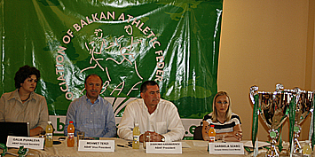
- 1 July 2011 - One day before the beginning of the 64-th Balkan Athletic Championships, the president of ABAF and president of Bulgarian Athletic Federation Dobromir Karamarinov, together with the Host of the Championships - the Mayor of Sliven city, Yordan Lechkov, gave an official press conference. 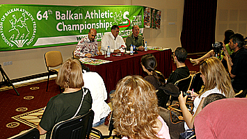
- Balkan Athletic Championships - Sliven'2011
- RESULTS - Balkan Mountain Running Championships: Dimitrovgrad (SRB)
- Balkans - Bulgaria is a host of the 11-th European Cup Winter Throwing
News
European champion Amela Terzic is preparing for a new medal
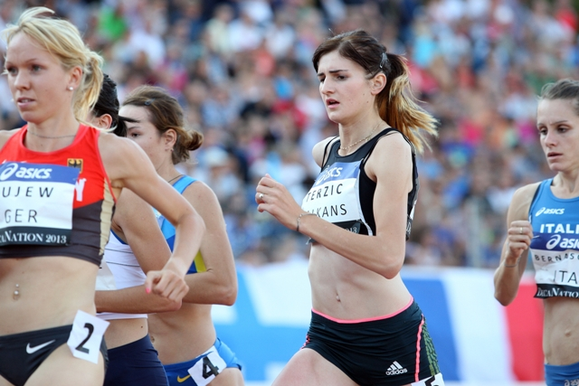The European Junior cross country Champion from Budapest last year, Serbian Amela Terzic, is starting very important preparation in Ulcinj, Montenegro. This is towards this years’ edition of the event on her home soil in Belgrade. It will be her debut in the U23 category. She competed four times so far in the junior category of the European Cross Country Championships and three times won medals, one of each denomination. „ For some years we are always going for preparation in Ulcinj where we have top conditions. My goal is to win a medal for my country at home.” Athletes from all Balkan countries are going to compete in Belgrade on the 8th of December 2013.
Text: Yana Kasova
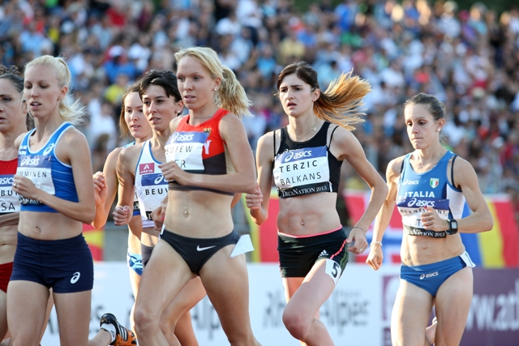Photos: Iliyan Telkedjiev
<------------->
Balkan Athletics Gala 2013, a brilliant celebration of a successful year, took place in Yerevan on 29 October.
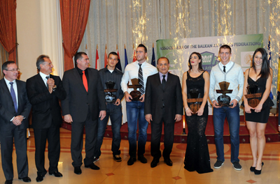
Montenegro national record holder Sladzana Perunovic won the 20th Podgorica Marathon in 2:42:33 and is also Balkan Champion
Results can be found here

SERBIA'S SPANOVIC HOPES TO SPRING A SURPRISE AGAIN IN SOPOT
Spanovic, 23, picked up the bronze medal in Moscow with a national record of 6.82m
Another recognition for the Balkan Athletics in Tallinn
Emir Bekric (Serbia) was announced European Raising Star of the year. Bekric won the titles in 400m Hurdles at the Balkan Champion in Stara Zagora and the European U23 Championship in Tampere. He was also bronze medallist from the World Championship in Moscow with a result of 43:08 – a National record and second best performance U23 of all times. He was awarded in the Seplane Harbour which is the maritime museum of Estonia, during the European Athletics Awards night. His coach Mirjana Stojanovic was also invited to the stage Tallinn, where she received a Women Leadership Award on behalf of all 24 selected women leaders in athletics.
He was awarded in the Seplane Harbour which is the maritime museum of Estonia, during the European Athletics Awards night. His coach Mirjana Stojanovic was also invited to the stage Tallinn, where she received a Women Leadership Award on behalf of all 24 selected women leaders in athletics. The Balkan Athletics has now 15 members
A regular Congress of the Association of the Balkan Athletic Federations (ABAF) was held on 10 October 2013 in Tallinn in the frame of the European Athletics Convention.IAAF Vice Pzresident Sergey Bubka attended the congress and took part in the discussions. European Athletics President Hansjorg Wirz also visited the congress to greet the delegates.
 left to right: Hansj?rg Wirz, European Athletics President, Dobromir Karamarinov, Balkan Athletics President, Sergey Bubka, IAAF Vice President
left to right: Hansj?rg Wirz, European Athletics President, Dobromir Karamarinov, Balkan Athletics President, Sergey Bubka, IAAF Vice PresidentThe Congress reviewed the membership requests of three countries and unanimously affiliated Slovenia, Cyprus and Georgia.
Slovenia belongs to the Balkans geographically and historically – Balkan championships were held in Ljubljana back in the times where it was part of Yugoslavia.
 Dobromir Karamarinov and Gregor Bencina, President of Slovenian Athletic Federation
Dobromir Karamarinov and Gregor Bencina, President of Slovenian Athletic Federation Cyprus also is part of the Balkan region and had taken part in Balkan Games in the past.
 Dobromir Karamarinov and Antonios Dracos, President of the Athletic Association of Cyprus
Dobromir Karamarinov and Antonios Dracos, President of the Athletic Association of CyprusGeorgia is on its way to actively developing athletics and is aiming to host international events.
 Dobromir Karamarinov and Alex Akhvlediani, President of the Athletic Federation of Georgia
Dobromir Karamarinov and Alex Akhvlediani, President of the Athletic Federation of GeorgiaJoining the Balkan Athletics would give them good experience as the ABAF events are important and interesting. The ABAF has now 15 member federations.
 left to right: Alex Akhvlediani GEO, Dobromir Karamarinov, Antonios Dracos CYP and Gregor Bencina SLO
left to right: Alex Akhvlediani GEO, Dobromir Karamarinov, Antonios Dracos CYP and Gregor Bencina SLOIstanbul (TUR) will host next Balkan Indoor Championships for the third consecutive year, on 22 February 2014. The Balkan Senior Championships will be held in Cluj Napoca (ROU) on 27-28 July 2013. Romania will also host the Balkan Mountain Running champs on 15 June in Vatra Dornei. The Balkan Marathon will be held in Belgrade (SRB) while the Half Marathon will be in Durres (ALB). The dates for these events will be confirmed soon. The Balkan Race Walking Championships will be held on 12 April 2014 in Balchik (BUL).

The Congress also decided to stage the Balkan Cross Country Championships in the autumn instead of the spring as it was until now, starting from 2014. Thus it could serve for selection of athletes for the European Cross Country Championships, which is traditionally held in the second weekend of December.
Balkan Records - 14/9/2013 updated


31 August 2013 - Balkan team fifth among the giants
 The Balkan team won the fifth place at DecaNation in Valance, France. The Balkan athletes competed in all 20 events and collected 87 points.
The Balkan team won the fifth place at DecaNation in Valance, France. The Balkan athletes competed in all 20 events and collected 87 points.
 Ivana Spanovic (SRB) and Georgi Ivanov (BUL) were the winner in their events. Serbian star Spanovic, who was third at the world championships in Moscow, achieved 6.82 (+2.1) for the first place in the long jump.
Ivana Spanovic (SRB) and Georgi Ivanov (BUL) were the winner in their events. Serbian star Spanovic, who was third at the world championships in Moscow, achieved 6.82 (+2.1) for the first place in the long jump.
 Ivanov was the best in the shot put with an amazing first attempt of 20.93m.
Ivanov was the best in the shot put with an amazing first attempt of 20.93m.
 Three other Balkan athletes ranked among the first three in their events. The European Champion Ivet Lalova (BUL) finished second in 100 m with 11.54 (-0.9) after Barbara Pierie (USA) who won the race with 11.18. Silviya Danekova (BUL) was also second in 3000m Steeplechase with 9:53.23after the German Gesa Felicitas Krause (9:52.88).
Binaka Perie (ROU), European U23 Champion 2011, threw the hammer for the third place at 67.87 m. Tatyana Lysenko (RUS) won the event with 71.86 followed by Alexandra Tavernier (FRA), 69.31.
The Balkan team won 10 000 euro from the Prize money.
Three other Balkan athletes ranked among the first three in their events. The European Champion Ivet Lalova (BUL) finished second in 100 m with 11.54 (-0.9) after Barbara Pierie (USA) who won the race with 11.18. Silviya Danekova (BUL) was also second in 3000m Steeplechase with 9:53.23after the German Gesa Felicitas Krause (9:52.88).
Binaka Perie (ROU), European U23 Champion 2011, threw the hammer for the third place at 67.87 m. Tatyana Lysenko (RUS) won the event with 71.86 followed by Alexandra Tavernier (FRA), 69.31.
The Balkan team won 10 000 euro from the Prize money.
Team results:
1 137 pt USA 2 121 pt RUSSIA 3 118 pt FRANCE 4 104 pt GERMANY 5 87 pt BALKANS 6 72 pt UKRAINE 7 54 pt NORDIC 8 46 pt ITALYBalkan athletes results:
100 m: Women – Ivet LALOVA (BUL) – 2nd place (7 points) – 11.54 (-0.9) Men – Denis DIMITROV (BUL) – 5th place (4 points) – 10.58 (-1.5) 400 m: Women – Adelina Dorina PASTOR (Rom) – 6th place (3 points) – 53.01 Men – Yavuz CAN (Tur) – 5th place (4 poitns) – 47.22 800 m: Women – Dorina KOROZSI (Rom) – 5th place (4 points) – 2:06. 06 min Men - Konstantinos NAKOPOULOS (Gre) – 7th place (2 points) - 1:51.35 min 1500 m: Women – Amela TERZIC (Srb) - 4th place (5 points) – 4:29.44 min Men - Goran NAVA (Srb) – 5th place (4 points) – 3:58.34 min 110 m hurdels Men - Konstantinos DOUVALIDIS (Gre) – 4th place (5 points) – 13.65 sek (-1.3) 100 m hurdles Women - Olympia PETSOUDI (Gre) – 7th place (2 points) – 13.72 sek (-0.7) 3000 m ST: Women - Silviya DANEKOVA (Bul) – 2nd place (7 points) – 9:53.23 min Men - Mitko TSENOV (Bul) – 8th place (1 points) – 8:54.73 min Long jump: Women - Ivana SPANOVIC (Srb) – 1st place (9 points) – 6.82 m (+2.1) Men – Alper KULAKSIZ (Tur) – 4th place (5 points) – 7.60 m (+0.8) Pole vault: Men - Panagiotis LASKARIS (Gre) – 7th place (2 points) – 5.10 m High jump: Women - Antonia STERGIOU (Gre) – 5th place – 1.85 m Shot put: Men - Georgi IVANOV (Bul) – 1st place (9 points) – 20.93 m Women - Radoslava MAVRODIEVA (Bul) – 7th place (2 points) – 16.12 m Hammer Throw: Women - Bianca PERIE (Rom) – 3rd place (6 points) – 67.87 m Men - Serghei MARGHIEV (Mda) – 7th place (2 points) – 68.59 mFull results of the competition can be found here: http://www.athle.fr/asp.net/main.html/html.aspx?htmlid=4337
31 August 2013 - DecaNation - Valence (France)
 Timetable DecaNation 2013
Timetable DecaNation 2013
The Balkan team is all set up for the DecaNation 2013
The best Balkan athletes will compete for the union team in DecaNation on 31 of August in Valance, France. Ivana Spanovic (SRB) – bronze medalist from IAAF World championships in Moscow, will represent the Balkan team in long jump. She set a new National record for Serbia in the Russian capital – 6.82m. The fastest sprinter in recent years and current European Champion Ivet Lalova (BUL) will compete in 100m. The Bulgarian star ranked 9th in Moscow both on 100m and 200m. She is leading European top lists 2013 with 11.04 in 100m. The selection of athletes was made based on the results achieved at the Balkan Senior Shampionships 27-28 of July in Stara Zagora/BUL.
The DecaNation was created in 2005 by the French Athletic Federation. It is a team competition in which Athletics becomes a team sport.Eight teams compete in ten events.
The Balkan team will compete for the first in the DekaNation aginst France, Russia, Germany, USA, Italy, USA, Ucraine and the Nordic countries (Norway, Finland and Denmark) All eight teams will have their share of the prize money, which will be distributed as follows:
1st place 30 000 ˆ
2nd place 20 000 ˆ
3rd place 15 000 ˆ
4th place 12 000 ˆ
5th place 10 000 ˆ
6th place 7 000 ˆ
7th place 5 000 ˆ
8th place 3 000 ˆ
The selection of athletes was made based on the results achieved at the Balkan Senior Shampionships 27-28 of July in Stara Zagora/BUL.
The DecaNation was created in 2005 by the French Athletic Federation. It is a team competition in which Athletics becomes a team sport.Eight teams compete in ten events.
The Balkan team will compete for the first in the DekaNation aginst France, Russia, Germany, USA, Italy, USA, Ucraine and the Nordic countries (Norway, Finland and Denmark) All eight teams will have their share of the prize money, which will be distributed as follows:
1st place 30 000 ˆ
2nd place 20 000 ˆ
3rd place 15 000 ˆ
4th place 12 000 ˆ
5th place 10 000 ˆ
6th place 7 000 ˆ
7th place 5 000 ˆ
8th place 3 000 ˆ
The Balkan team:
MEN: Denis Dimitrov (BUL) - 100m SB: 10.16 Yavuz Can (TUR) 400m – SB: 46.53 Konstantinos Nakopoulos (GRE) 800m – 1:47.81 Goran Nava (SRB) 1500m – SB: 3:41.83 Konstantinos Douvalidis (GRE) 110m hurdles – SB: 13.45 Mitko Tsenov (BUL) 3000St – SB: 8:27.09 Alper Kulaksiz (TUR) Long jump – SB: 7.68 Panagiotis Laskaris (GRE) Pole Vault – SB: 5.40 Georgi Ivanov (BUL) Shot Put – SB: 21.09 Serghei Marghiev (MDA) Hammer Throw – SB: 74.41 WOMEN: Ivet Lalova (BUL) 100m – SB: 11.04 Adelina Dorina Pastor (ROU) 400m – SB: 52.44 Dorina Korozi (ROU) 800m – SB: 2:03.50 Amela Terzic (SRB) 1500m – SB: 4:05.69 Olympia Petsoudi (GRE) 100m hurdles – SB:13.39 Silviya Danekova (BUL) 3000St – SB: 9:35.66 Ivana Spanovic (SRB) Long jump – SB: 6.82 Antonia Stergiou (GRE) High jump – SB: 195 Radoslava Mavrodieva (BUL) Shot Put – SB: 18.67 Bianca Perie (ROU) Hammer Throw – SB: 71.32 A formal ABAF meeting was held on 31 August in Valence. Representatives of 9 member federations were present. Special guest for the meeting was Mr Jean Gracia, European Athletics Vice President and General Director of the French athletic Federation. He admired the team spirit of the Balkans, their beautiful outfit and the determination of the athletes from different nations to compete as one team which is great promotion for athletics. He also invited Balkan Athletics to compete again in the DecaNation next year.
A formal ABAF meeting was held on 31 August in Valence. Representatives of 9 member federations were present. Special guest for the meeting was Mr Jean Gracia, European Athletics Vice President and General Director of the French athletic Federation. He admired the team spirit of the Balkans, their beautiful outfit and the determination of the athletes from different nations to compete as one team which is great promotion for athletics. He also invited Balkan Athletics to compete again in the DecaNation next year.
 Various operative matters were discussed at the meeting among which the potential hosts for the Balkan championships and Gala 2014. The planned educational activities were discussed. Decisions on these matters will be taken during the ABAF Ordinary Congress on 10 October 2013 in Tallinn, Estonia.
The affiliation of two more members will be voted at the Congress in October – Slovenia who was invited to join us a while ago and has taken steps in this direction lately and Cyprus who have submitted an official membership request.
Various operative matters were discussed at the meeting among which the potential hosts for the Balkan championships and Gala 2014. The planned educational activities were discussed. Decisions on these matters will be taken during the ABAF Ordinary Congress on 10 October 2013 in Tallinn, Estonia.
The affiliation of two more members will be voted at the Congress in October – Slovenia who was invited to join us a while ago and has taken steps in this direction lately and Cyprus who have submitted an official membership request.
 Photos by Ilian Telkedzhiev
Photos by Ilian Telkedzhiev
10-18 August 2013 - IAAF World Championships - Moscow


The composition of the Balkan team for the DecaNation Meeting will be decided based on the performances of the athletes during the Balkan Senior Championships 27-28 July 2913 in Stara Zagora, Bulgaria.
2013 DecaNation Information Guide -->
16 June 2013 - Balkan Mountain Running Championships: Poiana Brasov, Romania

Official Results of Balkan Mountain Running Championships: Poiana Brasov '2013, Romania (corrected)
23 June 2013 - AVAZ TOWER RUNNING 2013: Sarajevo, Bosnia and Herzegovina

Athletics at School for the Balkan countries

A fruitful cooperation between ABAF and the IAAF Regional Development Centre in Moscow took place in Bulgaria, following the personal recommendation of IAAF Vice President Sergey Bubka and the authorization of Malek El Hebil, Director of IAAF Member Services Department.

An “Athletics at School” seminar for the Balkan countries was held in the beautiful town of Teteven from 7th to 11th May 2013. It was attended by 20 participants from eight Balkan countries: Albania, Bosnia and Herzegovina, Bulgaria, Croatia, Greece, Macedonia, Montenegro and Romania. The other four ABAF members (Armenia, Moldova, Serbia and Turkey) were not represented because they are already implementing IAAF Kids Athletics programme in their countries. The beautiful scenery and fresh air of the peaceful town combined with the excellent conditions that hotel “Olymp” offered as accommodation and sports facilities were of great benefit to the success of the seminar. Vadim Zelenichok, Director of the RDC Moscow gave his high evaluation of the great organisation and the conditions offered in the sport centre of Teteven.

Lecturer was Bostjan Bradeshko from Slovenia. Young, enthusiastic and eager to deliver his profound knowledge he demonstrated high professionalism during the lectures and practical sessions. With his talent to connect with students and his deep understanding of the IAAF Kids Athletics Programme and the characteristics of the different age groups for which it is designed, Bostjan was a true leader. He managed to run the project smoothly and kept the attention of the audience during lectures and practical sessions.

Over 50 children from a local school took part in the practical demonstration on the stadium in Teteven. A true athletics star, Tereza Marinova, Olympic Champion in Triple Jump, joined the group inspiring and motivating the children to choose athletics as their favourite sport.

The participants, who were athletics coaches working with youngsters and teachers of physical education in primary schools were trained to implement athletics in an enjoyable way and make it accessible to every kid in form of various games. Different opinions were shared on many topics based on personal experienceñ in various backgrounds which contributed to the quality of the training process. The whole time there was a friendly working atmosphere with jokes and high spirits.

It was a successful project that will strengthen the partnership with IAAF and will benefit for the implementation of the IAAF Kids Athletics Programme on the Balkan area.


photos by Grigor Gutev and Galia Puhaleva
Samokov, a town in Sofia province in Bulgaria, will host the 2014 SPAR European Cross Country Championships.

The European Athletics Council decided on the host cities for the 2014 SPAR European Cross Country Championships and 2015 European Athletics U23 Championships and European Athletics Junior Championships at its meeting in Berlin on Saturday.
Samokov, a town in Sofia province in Bulgaria, will host the 2014 SPAR European Cross Country Championships, which is set to take place in December that year.
Tallinn in Estonia will host the European Athletics U23 Championships, while Eskilstuna in Sweden will host the 2015 European Athletics Junior Championships.
The three sole bidders presented their candidatures on Saturday morning at the 137th European Athletics Council meeting in Berlin.
European Athletics President Hansjorg Wirz said, “We are very pleased to award the 2014 SPAR European Cross Country Championships to Samokov. Bulgaria has shown its commitment to hosting European Athletics events and has a good strategy in place to grow athletics in the country through such competitions.
“We saw today in their presentation that the 2014 SPAR European Cross Country Championships will take place with a beautiful backdrop of the surrounding areas of Samokov. I wish the best to the Bulgarian athletics federation, the town of Samokov and the local organising committee as they work towards the event.”
20 April 2013 - Balkan Race Walking Championships: Ayvalik (TUR)

BRWC Ayvalik-2013 - RESULTS (XLSX)
2012 ABAF Web Site Visitors Statistics

9 March - Balkan Cross Country Championships: Zrenjanin (SRB)

Balkan Cross Country Championships Official Results
Three titles for Balkan athletes in Gothenburg

Another strong performance at the European Indoor Championships in Gothenburg was made by the Balkan athletes. The fastest woman on the old continent is the Bulgarian Tezdzhan Naimova. She triumphed at “Scandinavium” arena in 60 meters sprint with a personal best of 7.10 seconds. The 100 meters European champion from Helsinki Ivet Lalova missed the bronze medal in the same event by just one hundredth of a second. At 60 meter hurdles Nevin Yanit (TUR) convincingly took the first place with a new national record and a season lead in Europe of 7, 89 seconds. Her compatriot Ilhan Tanui Ozbilen won the silver medal in the 1500 meters with a season best of 3:37, 22 min. Unsurprisingly Balkan Shot put champion Asmir Kolasinac (Serbia) won in Gothenburg. For the title he put the shot at 20.62 meters, which was his best performance this season. Second in this event with a personal record of 20.34 meters finished Hamza Alic (Bosnia and Herzegovina). There was another medal for the Balkans in the Men’s Heptathlon. Mihail Dudas of Serbia won the bronze medal with another national record of 6099 points.

In the placing table of Euro Indoors 2013, Bulgaria is on 12th place with 20 points, Turkey and Serbia were 15th and 16th respectively with 18 points each, Greece is on 19th place with 16 points, Bosnia and Herzegovina took 22nd place with 8 points, and Romania is 26th with 4 points. In the medal standings Turkey is on 10th place with one gold and one silver medal. Serbia was 12th with one gold and one bronze medal. Bulgaria is on 13th place with a gold medal. With his bronze medal Bosnia and Herzegovina occupies the 18th place.

"I am delighted that once again Balkan athletes not only participated, but left a lasting mark on the 32nd European Indoor Championships” said ABAF President Dobromir Karamarinov. “The strong presence of Balkan athletes was distinguishable and so was their motivation In Gothenburg. Especially I want to congratulate Balkan athlete of the Year 2012 Kolasinac who won the Balkan Championships title in Istanbul a week ago, and then confirmed his excellent shape with another gold medal in Gothenburg. I wish from my heart a successful summer season to all Balkan athletes. "
Text and photo Plamen Valkov
28 April 2013, Thessloniki - International Track Relays "Stavros Baltidis"

Istanbul. Balkan Indoor Athletic Championships - 2013

Balkan Athletics is moving strongly forward with a sponsorship contract, Athletes of the Year awards and reception by Serbian President - Arandjelovac - SRB - 28-29 November 2012

Bulgarian Corporate Commercial Bank (CCB) is the new General Sponsor of the Association of the Balkan Athletic Federations (ABAF). Tsvetan Vasilev, Chairman of CCB Supervisory Board and Dobromir Karamarinov, ABAF President signed a 5-year sponsorship contract to the total amount of 1 million Euros in Belgrade a few hours before the Balkan Gala ceremony. European Athletics President Hansjorg Wirz and delegates of all 12 member federations were present in Serbia for the celebrations of a very successful Balkan athletics year.

The second Balkan Athletics Gala organised by Serbian Athletic Federation and ABAF was held in the city of Arandjelovac on 29 November.
Turkish middle distance runner Asli Cakir Alptekin and Serbian shot putter Asmir Kolasinac were declared Balkan Athletes of the Year 2012. Asli Cakir Alptekin is the Olympic Champion in 1500m and European Champion in the same discipline. Asmir Kolasinac won a bronze medal at the European Championships in Helsinki and was 7th at the London Olympic Games.

In his message at the Gala Ceremony Dobromir Karamarinov summarised the main activities organized by ABAF member federations throughout the year. A number of World and European events along with 9 Balkan Championships and a wide range of international competitions, corporate and social initiatives took place in the region. Nine Balkan Championships are already confirmed for the next year again, as well as international matches with other areas and educational activities.

President Hansjorg Wirz, who also received a special crystal prize from ABAF, said “For me the Association of the Balkan Athletics Federations is the best working regional structure in Europe”.

On the next morning the ABAF board and Hansjorg Wirz were received by the President of the Republic of Serbia Tomislav Nikolic. President Nikolic underlined the essential importance ABAF has for the better cooperation on the Balkans and its contribution for the development of athletics in the region.
“Those few days in Arandjelovac and Belgrade were very successful for the ABAF” said Karamarinov. Our activities were highly appreciated by European Athletics. The best Balkan athletes of the year were awarded and received the recognition they deserve for their hard work. I am satisfied with the General Sponsor we have now. The personal attendance of Tsvetan Vasilev of Corporate Commercial Bank was a very positive sign to the Balkan delegates for the Gala. In the last day of our visit we were given the high honor to be accepted by the president of Serbia Tomislav Nikolic; it comes to show the greater importance of our Association for the sport and social life in the region”.
The third Balkan Athletics Gala is to take place next year in Yerevan, Armenia.
Second Balkan Athletics Gala - Arandjelovac - SRB - 28-29 November 2012

The President of the Republic of Serbia is receiving ABAF delegation in Belgrade
The Association of Balkan Athletics Federations is having its Second Balkan Athletics Gala on 29 November 2012 in the beautiful Serbian city Arandjelovac. On this occasion selected delegates including European Athletics President Mr. Hansjorg Wirz and athletics legends Gabriela Szabo and Robert Emmiyan will be received by Mr. Tomislav Nikolic, President of the Republic of Serbia in his offices. The President will also give lunch for all participants on 29 November in Belgrade.
Gamze Bulut/TUR- silver medalist from the London Olympic Games and the European Championships in Helsinki at 1500m and Emir Bekric/SRB- silver medalist from the European Championships and semi-finalist at the Olympic Games in 400mH were awarded Balkan Rising Stars of the Year 2012.
To mark the end of a very successful season a glorious Gala celebration will take place in hotel Izvor, Arandjelovac in the evening where the best Balkan Athletes and Rising Stars of the Year will be awarded with unique glass trophies.
ABAF 2013 Calendar
ABAF was invited to take part in the famous DecaNation Meeting in 2013

Balkan athletics is becoming more popular and interesting to the athletics communities all over Europe. The ABAF was invited to take part for the first time with its own team in the DecaNation annual track and field meeting organised by the French Athletics Federation since 2005. The 2013 edition will be held in Valence, France on 31st of August.
DecaNation is a team competition in which athletics becomes a team sport. Eight teams are invited to compete in 2013: France, Russia, Ukraine, Germany, USA, the Nordic countries and the Balkans. Each team is composed by 20 athletes, one man and one woman per discipline. Each athlete is competing in their specialised event to score points for their respective teams. The events are:
for men: 100m, 400m, 800m, 1500m, 110mH, 3000St, PV, TJ, SP, HT
for women: 100m, 400m, 800m, 1500m, 100mH, 3000St, PV, TJ, SP, DT
All eight teams will have their share of the prize money, which will be distributed as follows:
1st place 30 000 ˆ
2nd place 20 000 ˆ
3rd place 15 000 ˆ
4th place 12 000 ˆ
5th place 10 000 ˆ
6th place 7 000 ˆ
7th place 5 000 ˆ
8th place 3 000 ˆ
The procedure for selection of athletes to represent the Balkans at the DecaNation Track and Field Meeting will be discussed during the ABAF meeting on the occasion of the Balkan Athletics Gala, Arandjelovac/SRB, and 29 November 2012.
Malta. Association of Balkan Athletics Federations (ABAF) adopted as its 12th member Armenia.

Malta. Association of Balkan Athletics Federations (ABAF) adopted as its 12th member Armenia. This happened during the ABAF Congress, which was held in Malta. Guests at the highest forum of athletics in the Balkans were the Vice President of the International Athletics Federation (IAAF) Sergei Bubka and President of the European Athletic Association (EAA) Hansjorg Virts. Thus ABAF already members of Athletics Federations - Bulgaria, Serbia, Greece, Croatia, Romania, Moldova, Turkey, Bosnia and Herzegovina, Macedonia, Albania, Montenegro and Armenia.
Proposal for membership of Armenia in ABAF was made by the President of the Armenian Athletic Federation Robert Emiyan during the extraordinary congress of the association in Kavarna on September 1, 2012 ABAF Congress in Malta was led by the President of the Association Dobromir Karamarinov. On it was established sports association calendar 2013, and dates of the second Balkan Athletics Gala - November 28 to 29 in Arandjelovac (Serbia). Today, EAA will have to approve the calendar races in Europe in 2013, and d, including those offered by ABAF. Congress of Balkan Athletics Federations is part of the EAA calendar conference, held in Malta from 11 to 13 October.
With dominating run, Tadese takes fifth title in Kavarna and Hailu surprises in Kavarna - World Half Marathon Championships
 more info -->
more info -->
Bulgaria and Balkans welcomes the World Half Marathon Championships - Kavarna '2012

1-9-2012: ABAF Extraordinary Congress - Kavarna '2012

Balkan member federations of the Association of Balkan Athletics Federations (ABAF) expressed their support for Armenia to become the 12th member of the association. This proposal was made by Robert Emmiyan – European Long Jump Champion and President of the Armenian Athletic Federation. This happened during the extraordinary congress of ABAF, held in luxury "Lighthouse Golf Resort & Spa", immediately after the First Balkan Half Marathon Championships. The decision of the affiliation will be formally taken at the regular congress of the association to be held on October 11 in Malta along with the European Athletics Convention. The extraordinary Congress in Bulgaria was chaired by President ABAF Dobromir Karamarinov. Jean Gracia, Vice President of European Athletics was an official guest of ABAF. He made a presentation on the development program of athletics.


OFFICIAL RESULTS: 1 September 2012 - First Balkan Half Marathon Championships: Kavarna (BUL)
OFFICIAL RESULTS: 21-22 July 2012 - Balkan Senior Championships: Eskisehir (TUR)
OFFICIAL RESULTS: 14 July - Balkan Youth Championships: Belgrade (SRB)
OFFICIAL RESULTS: 23-24 June - Balkan Junior Championships: Eskisehir (TUR)
7 June 2012 - Balkan Mountain Running Championships: Nova Zagora (BUL)
Official Results

Turkey dominated the 4th Balkan Mountain Running Championships 2012 (up and down race)

12 medals for Turkish team at the 4th Balkan Mountain Running Championships 2012 held in Nova Zagora, Bulgaria.

7 gold, 2 silver and 3 bronze medals won by Turkish runners. Gold medals in all four team categories and three individual titles!

Romania took the only one gold medal lost by Turkey and in total Romania was the second nation in the medal table with 6 medals in total: 1 gold, 1 silver and 4 bronze. Hosting Country Bulgaria was happy for celebrating also 6 medals: 5 silver and 1 bronze. In total seven Balkan Countries were present at the event: besides Turkey, Romania, Bulgaria also Albania FYR of Macedonia, Serbia and Greece sent their runners to the competition. In the senior women race, Rumanian Denisa Jonela Dragomir became Balkan Mountain Running Champion 2012 with 42.24 (distance of the race 8,360km, elevation ± 500m) in front of Turkish runners Yasemin Can (silveð, time 42.44) and Yagmur Tarhan (bronze, time 43.58). In the senior men’s race Turkish Mehmet Akkoyun won the title of Balkan Mountain Running Champion 2012 with 53.18 (distance of the race 12.540km, elevation ± 750m) in front of Bulgarian Nikolov Kiril (silver, time 53.56). Third and bronze medal Ercan Muslu (again Turkey) finished in 56.00.

Runners by three different Countries won medals in junior women race: gold for Cesminaz Yilmaz (Turkey, time 20.12), silver for Mircheva Militca (Bulgaria, time 20.27) and bronze for Rus Rebecca (Romania: time 20.47); the distance of the race was 4.180 km, elevation ± 250m.

Turkey totally dominated the junior men’s race (distance 8.360km, elevation ± 500m) with its’ four athletes arriving on the top four positions. Turkish athletes offered a great show in this race: Serkan Demir was leading but at the end of the race he slowed down to let his teammate Suat Karabulak join him and get a national flag. They were running together the last 20 meters holding the flag in-between and made a genuine battle for the first position crossing the finish line almost simultaneously in 36.36 min. Finally Suat Karabulak was declared Balkan Mountain Running Champion 2012. Serkan Demir got the silver medal and the bronze went to Ozan Iskey one minute behind (time 37.39).

It was the first time for Albania to take part in Balkan Mountain Running championships. The team had some problems on the road to Bulgaria. They arrived to Nova Zagora during the night before the race. Numbed and exhausted by the long bus travel, having missed the final confirmations and technical meeting, having slept only a couple of hours that night, the athletes managed however to join the competition and perform at their best.

The Balkan Championships was very well organized by the Municipality of Nova Zagora and Bulgarian Athletic Federation. The event was attended by local dignitaries among whom representatives of the leading political parties in Bulgaria, regional governors, and of course ABAF President Dobromir Karamarinov who is also President of Bulgarian Athletic Federation and Chairman of European Athletics Mountain Running Commission and Galia Puhaleva, ABAF General Secretary and WMRA Council member.
The Municipality of Nova Zagora led by Mayor Nikolay Grozev and Deputy Mayor Galia Zaharieva made an excellent job in organising a high class Balkan event, adequately covering all aspects from board and lodging, through transportation services, social programme to the perfect race course.
The event ended up with a splendid final banquet nearby the picturesque lake Zhrebchevo where the winners were awarded and participants had a loud and joyful party strengthening the bonds of friendship and partnership on the Balkans.
Text by Bruno Gozzelino and Galia Puhaleva
photos: ABAF

3-6 May 2012 - Sofia is hosting the European Athletics Council Meeting
 European Athletics Council will have its regular meeting in Sofia in a few days. The Council Members and their accompanying persons will enjoy the old-fashioned luxury of Grand Hotel Sofia from 3rd to 6th May 2012. Two bidding delegations will present to the Council their candidatures for future European Athletics events. The host city of the European Indoor Championships 2015 will be decided between the cities of Istanbul/TUR and Prague/CZE.
European Athletics Council will have its regular meeting in Sofia in a few days. The Council Members and their accompanying persons will enjoy the old-fashioned luxury of Grand Hotel Sofia from 3rd to 6th May 2012. Two bidding delegations will present to the Council their candidatures for future European Athletics events. The host city of the European Indoor Championships 2015 will be decided between the cities of Istanbul/TUR and Prague/CZE.
Bulgarian Athletic Federation together with the Mayors of Burgas and Stara Zagora are giving two dinners out for the Council Members in order to bring those cities to the athletics map of Bulgaria. Burgas has announced their intention to bid for the European Indoor Championships 2019. They have started constructing an indoor arena of 7500 seats with a clear vision for promoting and developing athletics in the region. When finished, the arena will start with a Balkan Indoor Championships, followed by yearly international meetings.
The stadium of Stara Zagora was the venue where Yordanka Donkova made her world record in 100m hurdles 24 years ago (12:21, still unbeaten). The Municipality has started a major reconstruction of this stadium. It is planned to become a modern athletics facility with main and warm-up stadiums, throwing fields and indoor track. The renovated stadium will open with a Balkan Senior Championships. The international meeting "Samarsko zname" will regain after several years break. Stara Zagora intends to bid for the European U23 Championships 2017.
The dinners will be attended by The Minister of physical education and sport Mr. Svilen Neykov the President of Bulgarian Olympic Committee Mrs. Stefka Kostadinova - another reigning world record holder (209cm in High Jump since 1987).
23-25 April 2012 - The IAAF Technical Suppliers came to Kavarna for a Technical site visit.
Emanuele Perotti Nigra - Head of IAAF IT department, Steve Marshall - SEIKO Timing services provider, Luca Sperotti - Deltatre data processing services provider and Thomas Busch - Betamobil HD TV facilities provider accompanied by LOC representatives of Bulgarian Athletic Federation and Kavarna Municipality inspected the start/finish area and the whole race course. The locations of various equipment and services was assessed and confirmed. TV cameras positions were discussed, detailed specifications were given to the local partners in order to properly set up the venue for the World Half Marathon Championships. 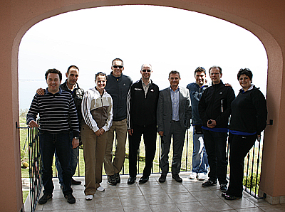 The marketing and promotion matters were also touched during a marketing meeting on Monday afternoon with Alexandra Fuchs and Jan Zmek of AMS with the presence of Galia Ivanova - deputy mayor of Kavarna, Kosta Atanasov - Director of Tourism and other LOC representatives. 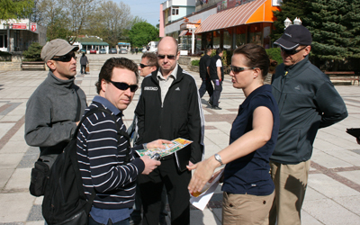 . 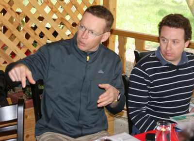 . 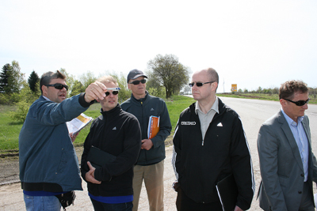2011 ABAF Web Site Visitors Statistics

7 April - Balkan Race Walking Championships: Bucharest (ROU)
Official Results22 April 2012 - Balkan Marathon Championships: Belgrade (SRB)

31 March 2012 - Balkan Cross Country Championships: Kocaeli-Darica (TUR)
 Official Results
Official Results
9-11 March 2012 - World Indoor Championships - Itsanbul'2012

18 February 2012 - Balkan Indoor Championships - Itsanbul'2012
 The 15th Balkan Indoor Championships took place on 18 February 2012 in Istanbul, as a test event for the World Indoors three weeks later. All 11 ABAF federations were represented plus two guest nations; athletes from Slovenia and Azerbaijan took part out-of-competition, thus helping the overall level of athletes’ performances.
It was a historical event being the first Balkan Indoor Championships held in Istanbul and the first international competition on the newly built Atakoy Sports Arena. Until now only the Greek capital had suitable facilities to host the Balkan Indoors, therefore all previous editions were held in Athens. There is still work to be done in terms of construction details and final touches; though the LOC is confident they will manage to finish everything on time.
The Arena is compact and cosy; has 7500 seats located very close to the track which gives the audience the unique experience of literally “feels the athletes’ breath”. Two giant HD video boards where tested with live TV broadcast. A small warm-up area beneath the North stand was used for the Balkan event, though a bigger warm-up track will be available for the World championships in the adjacent basketball hall, which will be connected to the athletics arena by a tunnel.
For the first time a 4 x 400m relay was held during a Balkan Championships – it was a non-scoring event this year, as it is not included in the Balkan Championships Regulations. ABAF Competition Committee will study the options of making the relay part of the official indoor programme.
The general organisation of the Balkan Indoor Championship was very good, proving the capacity of Turkish Athletic Federation to deliver an excellent World event in Istanbul, 9-11 March 2012. We wish our colleagues good luck and success!
Official Results - Men
Official Results - Women
See gallery here: http://bgathletic.com/photos.php?g_id=105
photos by Yana Kasova http://www.bgathletic.com
The 15th Balkan Indoor Championships took place on 18 February 2012 in Istanbul, as a test event for the World Indoors three weeks later. All 11 ABAF federations were represented plus two guest nations; athletes from Slovenia and Azerbaijan took part out-of-competition, thus helping the overall level of athletes’ performances.
It was a historical event being the first Balkan Indoor Championships held in Istanbul and the first international competition on the newly built Atakoy Sports Arena. Until now only the Greek capital had suitable facilities to host the Balkan Indoors, therefore all previous editions were held in Athens. There is still work to be done in terms of construction details and final touches; though the LOC is confident they will manage to finish everything on time.
The Arena is compact and cosy; has 7500 seats located very close to the track which gives the audience the unique experience of literally “feels the athletes’ breath”. Two giant HD video boards where tested with live TV broadcast. A small warm-up area beneath the North stand was used for the Balkan event, though a bigger warm-up track will be available for the World championships in the adjacent basketball hall, which will be connected to the athletics arena by a tunnel.
For the first time a 4 x 400m relay was held during a Balkan Championships – it was a non-scoring event this year, as it is not included in the Balkan Championships Regulations. ABAF Competition Committee will study the options of making the relay part of the official indoor programme.
The general organisation of the Balkan Indoor Championship was very good, proving the capacity of Turkish Athletic Federation to deliver an excellent World event in Istanbul, 9-11 March 2012. We wish our colleagues good luck and success!
Official Results - Men
Official Results - Women
See gallery here: http://bgathletic.com/photos.php?g_id=105
photos by Yana Kasova http://www.bgathletic.com
1 December 2011 - First Balkan Athletics Gala - Pravetz'2011
 The first awarded in the history of Balkan Athletics athletes are: Ivet LALOVA (BUL) and Fatih AVAN (TUR).
The Balkans Rising Stars in athletics are: Bianca PERIE (ROU) and Mihail DUDAS (SRB).
The first awarded in the history of Balkan Athletics athletes are: Ivet LALOVA (BUL) and Fatih AVAN (TUR).
The Balkans Rising Stars in athletics are: Bianca PERIE (ROU) and Mihail DUDAS (SRB).
1 December 2011 - ABAF Congress

1 December 2011 - New Athletics Stadium in Pravetz

Welcome to the Balkan Athletics Gala 2011!
28 November 2011 - Balkan Athletics Gala 2011 Official Press Conference


 A press conference was held today in Sofia to promote the Balkan Athletics Gala. Mr.Dobromir Karamarinov - President of the Association of the Balkan Athletics Federations has given an outfit for athletics training to newly elected Mayor of Pravetz Mr. Rumen Guninski, as a symbol of his involvment with Balkan Athletics.
A press conference was held today in Sofia to promote the Balkan Athletics Gala. Mr.Dobromir Karamarinov - President of the Association of the Balkan Athletics Federations has given an outfit for athletics training to newly elected Mayor of Pravetz Mr. Rumen Guninski, as a symbol of his involvment with Balkan Athletics.
 Special Plaques of Appreciation was presented to the partners FiBank, Master Card and Eurohol, whose contribution was essential for the starting of the Balkan Athletics Gala.
Special Plaques of Appreciation was presented to the partners FiBank, Master Card and Eurohol, whose contribution was essential for the starting of the Balkan Athletics Gala.


Vote is closed
The vote for Balkan Athlete of the year is now closed. The selection of the winners shall be made by a combination of the online voting, available to fans and general public, which has one third of the voting strength. E-mail votes received from a selected pool of Balkan Media & Specialists in athletics have also one third voting strength. ABAF experts’ panel composed by the Council Members forms the third part of the voting strength.Results from the on-line voting:


Croatia is becoming the 11th ABAF Member Federation
Following the decisions of ABAF Congress held in Tenerife on 13 October 2011, the athletic federations of Croatia and Slovenia were invited to join the Association of the Balkan Athletics Federations. From a geographical, historical and political perspective those countries belong to the Balkan area. They are considered part of the Balkan family as Balkan athletics championships were held in Zagreb and Ljubljana in the past.
Croatia gave a positive answer right away, thus becoming the eleventh ABAF member federation, sharing rights and responsibilities with the federations of Albania, Bosnia and Herzegovina, Bulgaria, Greece, Former Yugoslav Republic of Macedonia, Moldova, Montenegro, Romania, Serbia and Turkey. The formal membership is to be officialised by next ABAF Congress; in the meantime our Croatian friends are warmly welcomed to all ABAF activities. We believe they would contribute to the strength and prestige of the Association.
27th World Mountain Running Championships 2011 in Tirana - OFFICIAL RESULTS
 Official Results - Download PDF file here!
Official Results - Download PDF file here!
Sergei Bubka is coming to Pravets for the Balkan Gala
 IAAF Vice President Sergei Bubka (UKR) is going to visit Bulgaria as special guest for the First Balkan Athletics Gala. The Gala is organised by the Association of the Balkan Athletics Federations (ABAF) and will take place in hotel “RIU Pravets Golf and Spa Resort” on 1 December 2011. Representatives of the 10 ABAF member federations will attend the ceremony as well as the Balkan Athletes of the Year (one male and one female) who will be awarded with special prizes.
Aside from his leading position in the IAAF, Sergei Bubka is member of the International Olympic Committee (IOC), in his sports career he has won many times World and Olympic gold medals and he is the reigning world record holder in pole vault. The IAAF will be represented at the Gala in Pravets also by Ahmed Al Kamali (UAE), newly elected IAAF Council Member and President of the Athletic Federation of the United Arab Emirates.
The visit to Bulgaria of Bubka and Al Kamali was negotiated during IAAF Congress in Daegu by the President of Bulgarian Athletic Federation Dobromir Karamarinov. Bubka and Al Kamali confirmed today their attendance to the ceremony in Pravets.
IAAF guests and their colleagues from the ABAF will arrive to Bulgaria on 30 November 2011. Before the Gala they will visit the newly rebuild Stadium in Pravets, which should be entirely reconstructed by 1 December 2011 in order to meet all IAAF certification requirements.
“The visit of Bubka and Al Kamali to Bulgaria is just another IAAF recognition for the work of the Balkan Association” said Dobromir Karamarinov, ABAF President. “There is a tendency in our sport to increase the role of the Area Associations - we all saw in Daegu what the concurrence is at world championships. The young athletes should grow up and develop in a suitable concurrence for their age. We are good friends with Bubka and Al Kamali but we also have close partnership and professional relations with them.
IAAF Vice President Sergei Bubka (UKR) is going to visit Bulgaria as special guest for the First Balkan Athletics Gala. The Gala is organised by the Association of the Balkan Athletics Federations (ABAF) and will take place in hotel “RIU Pravets Golf and Spa Resort” on 1 December 2011. Representatives of the 10 ABAF member federations will attend the ceremony as well as the Balkan Athletes of the Year (one male and one female) who will be awarded with special prizes.
Aside from his leading position in the IAAF, Sergei Bubka is member of the International Olympic Committee (IOC), in his sports career he has won many times World and Olympic gold medals and he is the reigning world record holder in pole vault. The IAAF will be represented at the Gala in Pravets also by Ahmed Al Kamali (UAE), newly elected IAAF Council Member and President of the Athletic Federation of the United Arab Emirates.
The visit to Bulgaria of Bubka and Al Kamali was negotiated during IAAF Congress in Daegu by the President of Bulgarian Athletic Federation Dobromir Karamarinov. Bubka and Al Kamali confirmed today their attendance to the ceremony in Pravets.
IAAF guests and their colleagues from the ABAF will arrive to Bulgaria on 30 November 2011. Before the Gala they will visit the newly rebuild Stadium in Pravets, which should be entirely reconstructed by 1 December 2011 in order to meet all IAAF certification requirements.
“The visit of Bubka and Al Kamali to Bulgaria is just another IAAF recognition for the work of the Balkan Association” said Dobromir Karamarinov, ABAF President. “There is a tendency in our sport to increase the role of the Area Associations - we all saw in Daegu what the concurrence is at world championships. The young athletes should grow up and develop in a suitable concurrence for their age. We are good friends with Bubka and Al Kamali but we also have close partnership and professional relations with them.
27th World Mountain Running Championships 2011 in Tirana
Although Albania is a mountainous country with the highest peak Korab (2764m), the mountain running as sport discipline has just stared to develop in this part of the world.
It is one of the first time, that a country with no Mountain running tradition is hosting the Championships. Even more, in 2011 Albanian runners participated World's top event for the first time.
IAAF World Indoor Championships in Athletics - Istanbul, Turkey - 9/11 March 2012
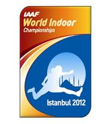 Famous as the only city in the world that straddles two different continents (Europe and Asia), the historical city of Istanbul is one of the largest metropolitan areas in the world, with a population of nearly 15 million. The old capital of the legendary Ottoman Empire is now one of Europe’s youngest and most exciting cities. The World Indoors will take place in the Sinan Erdem Dome , which has a capacity of 17,500 seats, just 10 minutes away from the international airport.The First Balkan Gala will take place on 1 December 2011
in the city of Pravets, Bulgaria (50 km North-East from Sofia). 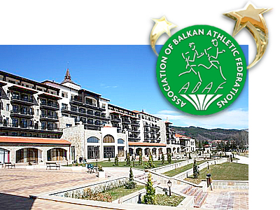 It will be a special ceremony to award the Balkan Athletes of the Year (one male and one female athlete), selected by open voting. The aim of the Balkan Gala is to attract more attention from media and spectators to our sport and to motivate the best Balkan athletes to participate in Balkan Championships. The Ceremony shall be held in elegant atmosphere with VIP guests and large media coverage. Along with the Gala, the entirely reconstructed athletics Stadium in Pravets shall be officially presented. Additional information about the nominations and voting procedure shall be available soon.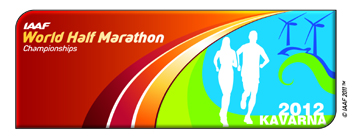 Dear friends,
BALKAN VOLUNTEERS
is an important programme for the implementation of volunteering in the Balkan area. The ABAF and Bulgarian Athletics are inviting all volunteers with experience in long distance running to take part in the preparation of the World Half Marathon Championships to be held on 6 October 2012 in Kavarna/BUL. 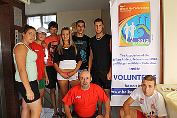 The Organising Committee is preparing a general Questionnaire available to download here: VOLUNTEER’S QUESTIONNAIRE. If you are interested in volunteering for the event, please fill in the questionnaire, add any additional information you feel relevant, and return it to the ABAF Head office and the Organising Committee for the World Half Marathon Championships Kavarna 2012:volunteers@balkan-athletics.eu
You are welcome to the Balkan athletics family and your contribution to our favorite sport - athletics is appreciated!Dobromir Karamarinov, ABAF President
19-21 July 2011 First IAAF Site visit for the World Half Marathon Championships Kavarna 2012
is being held in Kaliakria resort. Paul Hardy (CAN), IAAF Competitions Director (left) and Dobromir Karamarinov, President of Bulgarian Athletic Federation start discussions
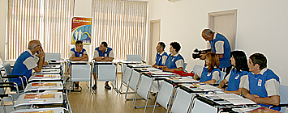
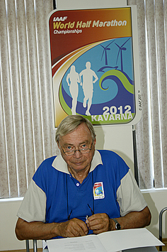
Otto Klappert (GER), IAAF Organisational Delegate.
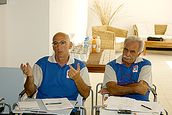
Carlo de Angeli (ITA), IAAF Senior Competitions Manager (left) and Massimo Magnani (ITA), Technical Delegate.
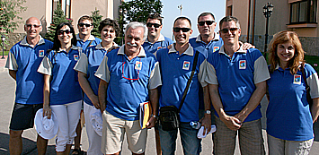
Paul Hardy (CAN), IAAF Competitions Director (left) and Dobromir Karamarinov, President of Bulgarian Athletic Federation start discussions
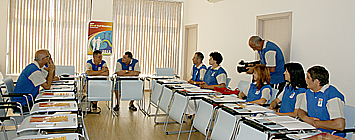
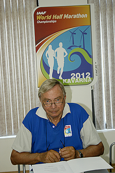
Otto Klappert (GER), IAAF Organisational Delegate.
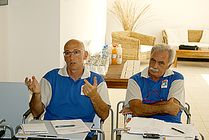
Carlo de Angeli (ITA), IAAF Senior Competitions Manager (left) and Massimo Magnani (ITA), Technical Delegate.
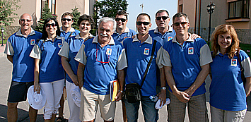
 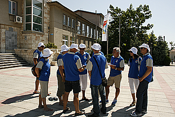
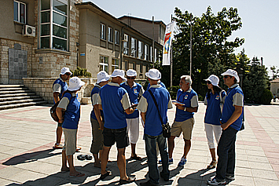
1 July 2011 - An Extraordinary ABAF Congress
was held today in hotel Sport Palace in Sliven, before the start of the Balkan Championships. All 10 Member Federations were represented by their delegates.


Bulgarian heads European Athletic Association commission for the first time
Bulgarian Athletics Federation President and Balkan Athletics President Dobromir Karamarinov has become the first Bulgarian to head a European Athletic Association commission. At a meeting of the European Athletics Council in Frankfurt (7/6/2011) Dobromir Karamarinov was elected chairperson of the Mountain Running Commission. In addition, he and Spain’s Jose Luis de Carlos will continue heading European Athletics Competition Committee.
Three ABAF representatives in European athletics Council
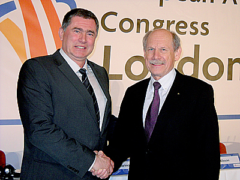The role of the Balkan countries reached new level during the 22nd European Athletics Congress in London. Three representatives of the Association of the Balkan Athletic Federations entered among the 13 members of the Council - the ABAF President Dobromir Karamarinov /BUL/, Munir Yarash /TUR/ and Gabriela Szabo /ROU/. Hansjorg Wirz was reelected as President of European Athletcs. It is second period in the Council for Karamarinov and Yarash and first for Szabo.
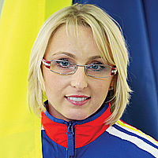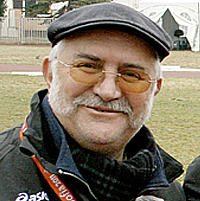“I am glad that for the first time in history there are three Balkan members in the European Athletics Council. It comes to prove the growing importance of our area in Europe”
The newly elected Council Members visited the Olympic Park in London, guided by Lord Sebastian Coe, President of the Organising Committee for the Olympics 2012.
On the Picture – the new/old European Athletics President Hansjorg Wirz (on the right) congratulates ABAF President Dobromir Karamarinov for his reelection for another term in European Athletics Council.
Head Office:
75, Vassil Levski Blvd., 1040 Sofia, Bulgaria
phones: (+359 2) 9885462; (+359 2) 9300669
fax: (+359 2) 9880714
headoffice@balkan-athletics.eu